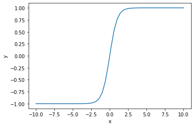
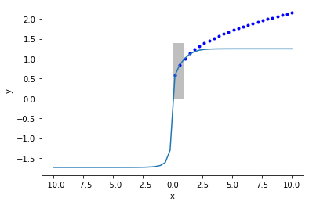
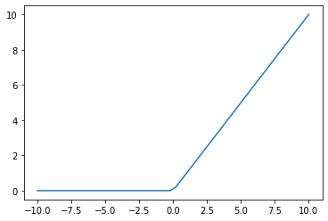
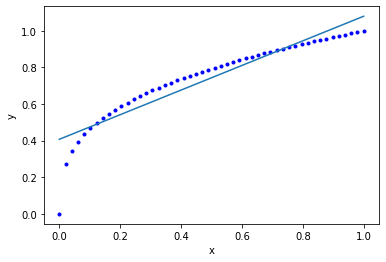
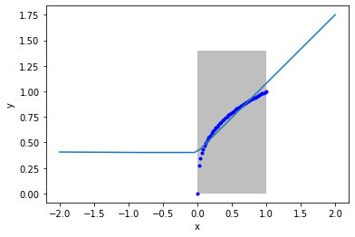
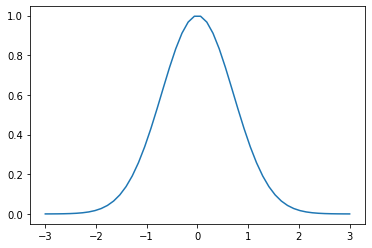
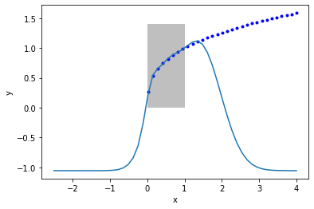

Machine learning
Table of Contents
1 Choice of activation functions in neural networks
The activation function in a neural network provides the nonlinearity in the model. We previously learned that one interpretation of the activation function is that it is a basis function that you can expand the data in to find a functional representation that fits the data.
Today we explore the impact of the activation function on the fitting, and extrapolation of neural networks. The following code is for setting up a neural network, and initializing the parameters with random numbers.
import autograd.numpy as np import autograd.numpy.random as npr def nn(params, inputs, activation=np.tanh): """a neural network. params is a list of (weights, bias) for each layer. inputs goes into the nn. Each row corresponds to one output label. activation is the nonlinear activation function. """ for W, b in params[:-1]: outputs = np.dot(inputs, W) + b inputs = activation(outputs) # no activation on the last layer W, b = params[-1] return np.dot(inputs, W) + b def init_random_params(scale, layer_sizes, rs=npr.RandomState(0)): """Build a list of (weights, biases) tuples, one for each layer.""" return [(rs.randn(insize, outsize) * scale, # weight matrix rs.randn(outsize) * scale) # bias vector for insize, outsize in zip(layer_sizes[:-1], layer_sizes[1:])]
As before, we are going to consider this dataset so we can evaluate fitting and extrapolation.
# Some generated data X = np.linspace(0, 1) Y = X**(1. / 3.) %matplotlib inline import matplotlib.pyplot as plt plt.plot(X, Y, 'b.') plt.xlabel('x') plt.ylabel('y')
Text(0, 0.5, 'y')
<Figure size 432x288 with 1 Axes>

1.1 tanh
First we review the case of tanh which is a classic activation function. The tanh function is "active" between about ± 2.5, and outside that window it saturates. That means the derivative of this function becomes close to zero outside that window. So if you have large values of inputs, you should scale them to avoid this issue.
xt = np.linspace(-10, 10) plt.plot(xt, np.tanh(xt)) plt.xlabel('x') plt.ylabel('y')
Text(0, 0.5, 'y')
<Figure size 432x288 with 1 Axes>

def objective1(params, step=None): pred = nn(params, np.array([X]).T) err = np.array([Y]).T - pred return np.mean(err**2) from autograd.misc.optimizers import adam from autograd import grad params1 = init_random_params(0.1, layer_sizes=[1, 3, 1]) N = 50 MAX_EPOCHS = 500 for i in range(MAX_EPOCHS): params1 = adam(grad(objective1), params1, step_size=0.01, num_iters=N) if i % 100 == 0: # print every 100th step print(f'Step {i}: {objective1(params1)}') if objective1(params1, _) < 2e-5: print('Tolerance reached, stopping') break
Step 0: 0.02031901154302905 Step 100: 8.146090083119546e-05 Tolerance reached, stopping
Now we can examine the fit and extrapolation.
X2 = np.linspace(-10, 10) Y2 = X2**(1/3) Z2 = nn(params1, X2.reshape([-1, 1])) plt.plot(X2, Y2, 'b.', label='analytical') plt.plot(X2, Z2, label='NN') plt.fill_between(X2 < 1, 0, 1.4, facecolor='gray', alpha=0.5) plt.xlabel('x') plt.ylabel('y');
/Users/jkitchin/opt/anaconda3/lib/python3.7/site-packages/ipykernel_launcher.py:2: RuntimeWarning: invalid value encountered in power
<Figure size 432x288 with 1 Axes>

For large enough \(x\), all of the tanh functions saturate at \(y=1\). So, the neural network also saturates at a constant value for large \(x\).
exercise Can you work out from the NN math what the saturated values should be?
1.2 relu
A common activation function in deep learning is the Relu:
def relu(x): return x * (x > 0) plt.plot(X2, relu(X2))
[<matplotlib.lines.Line2D at 0x115545710>]
<Figure size 432x288 with 1 Axes>

This is popular because if is very fast to compute, and the derivatives are constant. For positive \(x\) there is no saturation. For negative \(x\), however, the neuron is "dead".
def objective2(par, step=None): pred = nn(par, np.array([X]).T, activation=relu) err = np.array([Y]).T - pred return np.mean(err**2) from autograd.misc.optimizers import adam from autograd import grad params2 = init_random_params(0.01, layer_sizes=[1, 3, 1]) N = 50 MAX_EPOCHS = 500 for i in range(MAX_EPOCHS): params2 = adam(grad(objective2), params2, step_size=0.01, num_iters=N) if i % 100 == 0: # print every 100th step print(f'Step {i}: {objective2(params2)}') if objective2(params2, _) < 2e-5: print('Tolerance reached, stopping') break
Step 0: 0.021367865048848897 Step 100: 0.005829854754475911 Step 200: 0.0058296222524038075 Step 300: 0.005829395128164378 Step 400: 0.005829289683203641
X2 = np.linspace(0., 1) Y2 = X2**(1/3) Z2 = nn(params2, X2.reshape([-1, 1]), activation=relu) plt.plot(X2, Y2, 'b.', label='analytical') plt.plot(X2, Z2, label='NN') plt.xlabel('x') plt.ylabel('y');
<Figure size 432x288 with 1 Axes>

params2
[(array([[ 0.00154947, 1.19185304, -0.06849918]]),
array([-0.01980796, 0.00939488, -0.05808362])),
(array([[0.01230291],
[0.5637435 ],
[0.05575994]]),
array([0.40197107]))]
Notes:
- The fit is not very good.
- we have piecewise linear fits here.
- There are negative weights, which means there are some "dead neurons". Maybe other initial guesses might improve this.
Let's look at the extrapolating behavior.
X2 = np.linspace(0, 1) Y2 = X2**(1/3) xf = np.linspace(-2, 2) Z2 = nn(params2, xf.reshape([-1, 1]), activation=relu) plt.plot(X2, Y2, 'b.', label='analytical') plt.plot(xf, Z2, label='NN') plt.fill_between(X2 < 1, 0, 1.4, facecolor='gray', alpha=0.5) plt.xlabel('x') plt.ylabel('y');
<Figure size 432x288 with 1 Axes>

Notes this extrapolates linearly on the right, and is constant on the left. These are properties of the Relu.
1.3 Gaussian (radial basis function)
Finally we consider the Gaussian activation function.
def rbf(x): return np.exp(-x**2) x3 = np.linspace(-3, 3) plt.plot(x3, rbf(x3))
[<matplotlib.lines.Line2D at 0x1159a7490>]
<Figure size 432x288 with 1 Axes>

Now we fit the data.
def objective3(pars, step=None): pred = nn(pars, np.array([X]).T, activation=rbf) err = np.array([Y]).T - pred return np.mean(err**2) from autograd.misc.optimizers import adam from autograd import grad params3 = init_random_params(0.1, layer_sizes=[1, 3, 1]) N = 50 MAX_EPOCHS = 500 for i in range(MAX_EPOCHS): params3 = adam(grad(objective3), params3, step_size=0.01, num_iters=N) if i % 100 == 0: # print every 100th step print(f'Step {i}: {objective3(params3)}') if objective3(params3, _) < 2e-5: print('Tolerance reached, stopping') break
Step 0: 0.04493958596201498 Step 100: 0.0011542874884390897 Step 200: 0.001087692050875522 Step 300: 0.0010358096429038638 Step 400: 0.0009656108916493105
X2 = np.linspace(0., 1) Y2 = X2**(1/3) Z2 = nn(params3, X2.reshape([-1, 1]), activation=rbf) plt.plot(X2, Y2, 'b.', label='analytical') plt.plot(X2, Z2, label='NN') plt.xlabel('x') plt.ylabel('y');
<Figure size 432x288 with 1 Axes>

X2 = np.linspace(-2.5, 4) Y2 = X2**(1/3) Z2 = nn(params3, X2.reshape([-1, 1]), activation=rbf) plt.plot(X2, Y2, 'b.', label='analytical') plt.plot(X2, Z2, label='NN') plt.fill_between(X2 < 1, 0, 1.4, facecolor='gray', alpha=0.5) plt.xlabel('x') plt.ylabel('y');
/Users/jkitchin/opt/anaconda3/lib/python3.7/site-packages/ipykernel_launcher.py:2: RuntimeWarning: invalid value encountered in power
<Figure size 432x288 with 1 Axes>

Notes this extrapolates to zero when you are far from the data. It fits reasonably in the region trained. "If your function is nonlinear enough, somewhere the nonlinearity matches your data." (Z. Ulissi).
1.4 Summary
We can think of single layer neural networks as partial expansions in the activation function space. That means the extrapolation behavior will be like the dominating feature of the activation functions, e.g. relu extrapolates like a line, tanh saturates at large x, and Gaussians effectively go to zero. Unexpected things can happen at the edges of the data, so at intermediate extrapolations you do not always know what will happen.
2 Train/test splits on data
So far we have not considered how to split your data when fitting. This becomes important for a few reasons:
- We need to be able to tell if we are overfitting. One way to do this is to compare fitting errors to prediction errors.
This means we need a way to split a dataset into a train set and a test set. Then, we can do training on the train set, and testing on the test set.
Let's start by remembering what our dataset is.
X = np.linspace(0, 1) Y2 = X**(1/3)
The way to split this is that we use indexing. We start by making an array of integers.
ind = np.arange(len(X)) ind
array([ 0, 1, 2, 3, 4, 5, 6, 7, 8, 9, 10, 11, 12, 13, 14, 15, 16,
17, 18, 19, 20, 21, 22, 23, 24, 25, 26, 27, 28, 29, 30, 31, 32, 33,
34, 35, 36, 37, 38, 39, 40, 41, 42, 43, 44, 45, 46, 47, 48, 49])
Next, we randomly shuffle the array of integers.
pind = np.random.permutation(ind)
pind
array([ 9, 5, 25, 20, 36, 14, 42, 13, 2, 7, 10, 29, 16, 4, 31, 47, 19,
27, 34, 21, 44, 6, 26, 37, 35, 8, 24, 23, 45, 40, 1, 48, 17, 30,
43, 15, 22, 18, 33, 0, 46, 49, 32, 3, 28, 11, 39, 12, 41, 38])
Next, we decide on the train/test split. A common choice is 80/20. We find the integer that is closest to 80% of the index array.
split = int(0.8 * len(pind)) split
40
train_ind = pind[:split] test_ind = pind[split:] (len(train_ind), len(test_ind))
(40, 10)
We check that we have a reasonable choice here.
train_x = X[train_ind] train_y = Y2[train_ind] test_x = X[test_ind] test_y = Y2[test_ind] plt.plot(test_x, test_y, 'ro') plt.plot(train_x, train_y, 'bo')
[<matplotlib.lines.Line2D at 0x115edc950>]
<Figure size 432x288 with 1 Axes>

Now, we train on the train data.
def objective10(params, step=None): pred = nn(params, np.array([train_x]).T) err = np.array([train_y]).T - pred return np.mean(err**2) from autograd.misc.optimizers import adam from autograd import grad params10 = init_random_params(0.1, layer_sizes=[1, 3, 1]) N = 50 MAX_EPOCHS = 500 for i in range(MAX_EPOCHS): params10 = adam(grad(objective10), params10, step_size=0.01, num_iters=N) if i % 100 == 0: # print every 100th step print(f'Step {i}: {objective10(params10)}') if objective10(params10, _) < 2e-5: print('Tolerance reached, stopping') break
Step 0: 0.01901760206790496 Step 100: 4.142492030081142e-05 Tolerance reached, stopping
As usual, we should check the fit on the train data. This is a little trickier than before, because the points are out of order.
Z2 = nn(params1, train_x.reshape([-1, 1])) plt.plot(train_x, Z2, 'bo', label='NN') plt.plot(train_x, train_y, 'r.', label='analytical') plt.xlabel('x') plt.ylabel('y') plt.plot(test_x, nn(params1, test_x.reshape([-1, 1])), 'go', label='NN') plt.plot(test_x, test_y, 'y.', label='analytical')
[<matplotlib.lines.Line2D at 0x11607c990>]
<Figure size 432x288 with 1 Axes>

rmse_train = np.mean((train_y - nn(params1, train_x.reshape([-1, 1]))**2)) rmse_test = np.mean((test_y - nn(params1, test_x.reshape([-1, 1]))**2)) print(f'''RMSE train = {rmse_train:1.3f} RMSE test = {rmse_test:1.3f}''')
RMSE train = 0.154 RMSE test = 0.120
For the train/test split to be meaningful, it is important that the two datasets have similar distributions of values.
3 Summary
Today we reviewed the role of activation functions in neural networks, and observed that it doesn't generally matter what you use (but the details always matter in individual cases). The mathematical form of these activation functions determines how they will extrapolate, which can be important depending on your application.
We then explored how to efficiently split a dataset into a train and test set so that overfitting can be evaluated. This becomes increasingly important for when you plan to explore many models (choices of hyperparameters), and then you split the data three ways (train, test and validate).